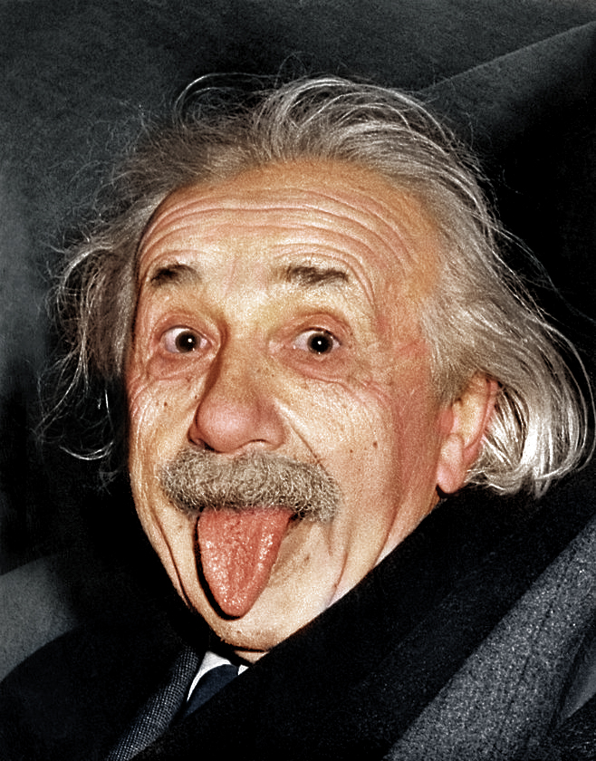
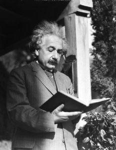
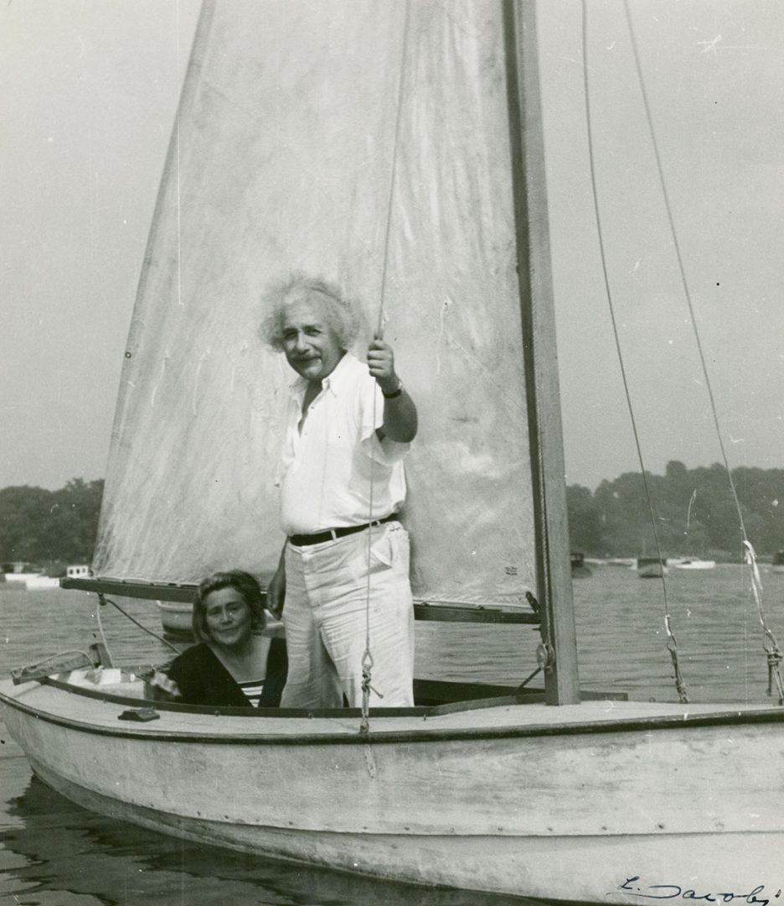
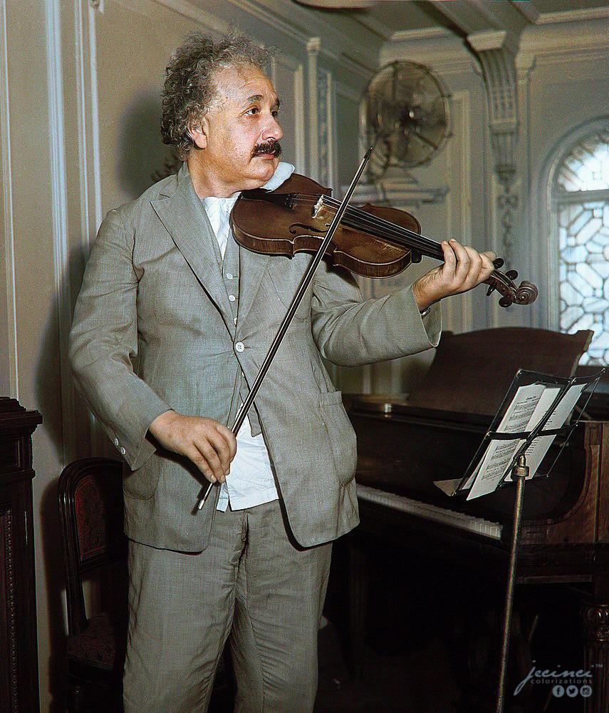
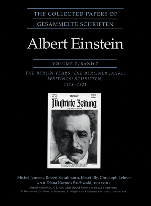
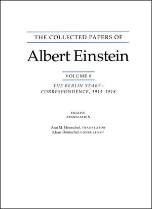
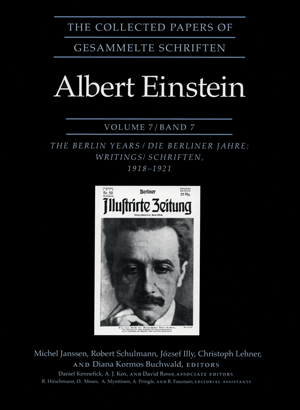
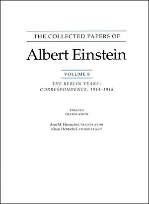

About:

Name: Albert Einstein
Born: March 14, 1879, Ulm, Germany
Died: April 18, 1955, Princeton, New Jersey, United States
Height: 5'9" (1.75m)
Albert Einstein was born in 1879 in Ulm, Germany. He was Hermann and Pauline Einstein's first child. Even though he went to school as a young child, his parents taught him the violin and Judaism at home. He had taught himself geometry by the time he was twelve. He was sixteen years old when he failed the exam that was required to become a qualified electrical engineer. He continued his education and made fresh plans for the future. Einstein chose to major in mathematics and physics in order to become a teacher. Since he lacked creativity and pragmatism and could only think mathematically and abstractly, Einstein believed he would be good at this. He gave up his German citizenship in 1896. It was not until 1901 that he acquired citizenship in Switzerland.His teaching credential in math and physics was awarded in 1900. He struggled to get recommended for a position at a university, though, as his teachers did not hold him in high regard. He wed Mileva Maritsch in 1901 and accepted a position as a temporary high school instructor. Before getting a divorce, the couple had two boys. Later, Elsa Einstein, Einstein's cousin, wed him. Einstein was employed in Bern, Switzerland, from 1902 until 1909 in a patent office. He wrote numerous articles on theoretical physics while employed at the Patent Office. In 1905, he received his doctorate.The most famous equation he created, E=(mc)2, states that energy (E) equals mass (m) times the squared speed of light (c).
Hobbies



Albert Einstein's hobbies were sailing, reading and playing the violin and piano.
Albert Einstein, renowned for his monumental contributions to physics, also nurtured diverse hobbies that enriched his personal life. He was an avid musician, particularly fond of playing the violin, which he considered as a source of joy and reflection akin to his scientific pursuits. Einstein also enjoyed sailing, embracing the solitude and the mental respite it offered, despite his self-confessed lack of navigational skill. He was a voracious reader with a deep interest in philosophy, finding inspiration and intellectual stimulation in the works of philosophers like Baruch Spinoza. Walking and cycling were among his simpler pleasures, activities through which he appreciated the beauty of nature and enjoyed moments of solitude or contemplation. Beyond these, Einstein engaged in extensive correspondence, sharing his thoughts and insights on a myriad of subjects with friends, colleagues, and notable figures around the world. These hobbies, alongside his dedication to advocacy for peace and civil rights, paint a picture of Einstein as a figure deeply engaged with the world, both intellectually and emotionally, beyond his scientific legacy.
 Volume 1:The Early Years 1879-1902
Volume 1:The Early Years 1879-1902
 Volume 2:The Swiss Years: Writings, 1900-1909
Volume 2:The Swiss Years: Writings, 1900-1909
 Volume 3:The Swiss Years: Writings 1909-1911
Volume 3:The Swiss Years: Writings 1909-1911
 Volume 4:The Swiss Years: Writings 1912-1914
Volume 4:The Swiss Years: Writings 1912-1914
 Volume 5:The Swiss Years: Correspondence, 1902-1914
Volume 5:The Swiss Years: Correspondence, 1902-1914
 Volume 6:The Berlin Years: Writings, 1914-1917

Volume 7:The Berlin Years: Writings, 1918-1921

Volume 8:The Berlin Years: Correspondence 1914-1917(English translation supplement)
Volume 6:The Berlin Years: Writings, 1914-1917

Volume 7:The Berlin Years: Writings, 1918-1921

Volume 8:The Berlin Years: Correspondence 1914-1917(English translation supplement)